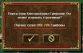

Изменения
Здесь отображены основные нововведения HotA, касающиеся игрового процесса. Полное описание, включающее в себя всю информацию об изменениях в новом дополнении, можно найти на официальном форуме.
Изменения
Общие изменения игрового процесса.
- В городах игрока с фортом по умолчанию всегда построено жилище 2 уровня.
- Изменена механика заклинаний Полет, Хождение по воде и Дверь измерений.
Теперь при помощи них невозможно собирать или посещать объекты, рядом с которыми не пробита охрана. Также см. "исправление багов игрового процесса" п.1. - Родная земля в бою в подземном мире зависит от территории, на которой проходит бой.
В оригинале не зависела, всегда была подземельем. - Внешние жилища, принадлежащие игрокам, копят существ каждую неделю.
Если жилища никому не принадлежат, то еженедельно количество существ в них равняется одному приросту. - Введена отрицательная удача.
При отрицательной удаче отряд имеет шанс нанести половинный урон. Чем выше степень отрицательной удачи - тем выше шанс (-1: 8.3%, -2: 16.7%, -3: 25%)..jpg "Увеличить изображение")
- Существа в бою без героя теперь могут подвергаться эффекту удачи и неудачи.
В оригинале удача никогда не срабатывала для существ, на стороне которых в битве нет героя, даже если она была у них положительная или отрицательная. - Навык Разведка увеличивает радиус обзора героя на 1/3/5 клеток вместо 1/2/3.
- Исключены морские элементы со случайных карт без воды.
На картах без воды недоступны герои со специализацией по навигации, заместо них доступны другие герои (Дерек, Беатрис и Кинкерия).
При генерации случайной карты без воды следующие элементы полностью исключаются из игры:ПоказатьНа случайных картах без воды стартовое заклинание героя Джем Вызвать корабль было изменено на Благословение. - На случайных картах отключены недели и месяцы существ и чумы.
- Стрелковая башня полностью игнорирует защиту цели.
Также см. "исправление багов игрового процесса" п.4. - Оковы войны действуют только когда у обеих сторон в битве есть герои.
Раньше, имея на себе Оковы войны, нельзя было сбежать от нейтрального отряда.
Изменения городов, героев и существ.
Замок
Оплот
Башня
Инферно
Некрополис
Темница
Цитадель
Крепость
Сопряжение
Изменения стандартных объектов.
- Карты Картографов теперь стоят 10000 вместо бывших 1000.
- Хижины провидцев не могут требовать артефактов, являющихся частями сборных артефактов.
- Сопряжение Стихий (внешнее жилище) дает +1 к приросту всех видов элементалей (раньше давало +1 к приросту только воздушных элементалей).
- На случайных картах вместо старых фортов на холме генерируются новые.
- На случайных картах теперь все монолиты двухсторонние.
- На случайных картах больше не генерируются следующие объекты:
- Добавлены ограничения на максимальное количество некоторых объектов в зоне:
- Добавлены ограничения на максимальное количество свитков заклинаний:
Показать
Показать
Показать
При этом добавлен механизм равномерного распределения заклинаний в свитках: на карте всегда будет примерно
одинаковое количество свитков со всеми заклинаниями одного и того же уровня, причем свитки с одинаковыми
заклинаниями имеют меньший шанс находиться рядом друг с другом.
Изменения интерфейса.
- Изменения интерфейса боя:
- При посещении банков существ добавлена информация об их охране
(также можно посмотреть по клику правой кнопкой мыши или при наведении).

.jpg "Увеличить изображение")
- Добавлен показ доступных для найма существ (по клику правой кнопкой мыши или при наведении).
- Добавлено отображение рассчитываемых параметров в описания некоторых заклинаний:
- Добавлены цифровые количества примерных описаний армий.
.jpg "Увеличить изображение")
- Добавлена кнопка обмена между героями в городе.
- Добавлена возжность отключить в настройках карты приключений фоновые звуки.
.jpg "Увеличить изображение")
- Добавлена поддержка новых размеров карт: H (180x180), XH (216x216), G (252x252).
- В игре и редакторе реализована поддержка новых условий победы:
«Победить всех монстров»
 и
«Выжить определенное время»
и
«Выжить определенное время»  .
.
Показать
.jpg "Увеличить изображение")
.jpg "Увеличить изображение")
.jpg "Увеличить изображение")
Показать
Исправление багов игрового процесса.
- Исправлены баги с заклинанием Полет.
- Исправлена некорректная работа ограниченного боезапаса.
- Исправлен баг "пронос нейтралов".
Теперь при наличии нейтралов, даже только в самых первых слотах армии, герой никогда не может игнорировать штраф местности из-за того, что она является родной землей каких-либо других его существ. Также герой без существ передвигается по любой земле как по родной. - Исправлен неверный расчет бонусов урона для Стрелковых башен.
Параметр атаки у Стрелковой башни - 10, также учитывается атака защищающегося героя и его навык Стрельбы. Поэтому урон у Стрелковой башни теперь выше, чем в оригинале, где атака считалась нулевой, а параметры героя не влияли на урон. - Цена боевых машин больше не включается в стоимость откупа.
- Исправлена некорректная работа навыка Разведки и дальности обзора.
Раньше при выкупе героя, получении или продвижении навыка Разведки или надевании артефакта, увеличивающего дальность обзора, новая территория открывалась не сразу, а только после шага героем по карте (теперь всегда открывается сразу). - Исправлен баг с ИИ, перемещающим в тактической фазе двухгексовые отряды на клетку ближе к противнику, чем позволяет уровень навыка.
- Значок смелости больше не дает иммунитета к магии разума.
- Исправлен баг, из-за которого Гарпия после атаки Дендроида или Дендроида-солдата и получения ответного удара возвращалась на исходную позицию, несмотря на то, что была привязана.
- Исправлен баг, из-за которого Забывчивость колдовалась на всех врагов уже при наличии продвинутой магии воды, а не только экспертной.
- Исправлена некорректная работа поднятия нежити при помощи Некромантии.
Теперь нельзя поднимать нежить из призванных и принесенных в жертву существ, а так же из существ, из которых были подняты демоны (из самих поднятых демонов нежить поднимать можно). - Стартовые навыки Мудрость Уланда и Разведка Димера понижены с продвинутого уровня до базового т.к. у них по 2 стартовых вторичных навыка.
- Университет больше не предлагает к изучению Некромантию.
- Исправлен баг с возможностью повторного посещения Сирен героем после боя.
- Исправлен баг с возможностью получить бесконечные очки передвижения за счет Шляпы адмирала.
- Исправлен баг с отсутствием пересчета очков передвижения при побеге героя на воде.
Показать
Показать
Исправление багов ГСК.
- Улучшено соответствие соотношений размеров зон ГСК с указанными в шаблоне размерами.
- Исправлен баг со сдвинутой охраной объектов в ГСК (иногда можно было посещать объекты без боя с охраной).
- Дороги на случайных картах теперь не проходят через багнутые проходы и не блокируются тюрьмами.
- Города в пределах одной зоны теперь всегда связаны дорожной сетью внутри этой зоны, если главный город зоны имеет форт.
- Исправлен баг с генерацией большего количества связей, чем прописано в шаблоне, при наличии нескольких связей между одной и той же парой зон.
- Исправлен баг ГСК с расположением части зоны в виде узкой полоски вдоль края карты.
- Исправлены баг ГСК с добавлением некорректных проходов между зонами из-за генерации объектов рядом с границей зон (кроме городов).